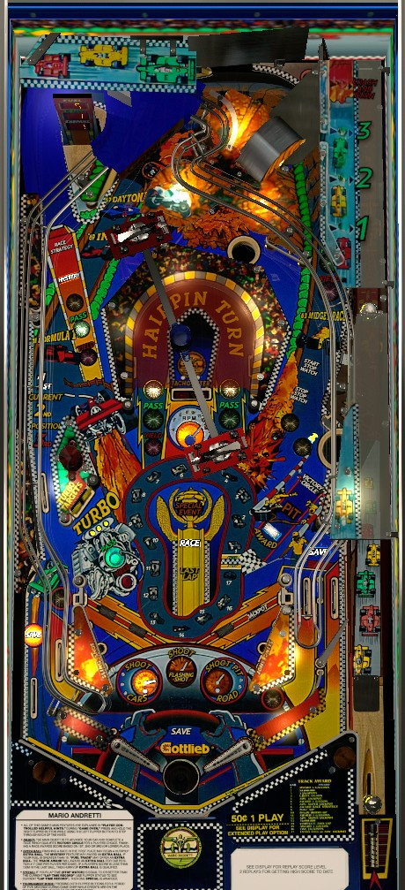

Shoot the spinning car toy, any shot with a lit yellow racecar insert, slingshots, or pop bumpers to advance the car around the track on the playfield. Shots lit Green for Pass increase the racer's position, and shots lit red for Yield lower it; the higher your position, the better your award when completing a race after one or two laps. Race Strategy can be earned by shooting the left ramp after completing a lap that does not finish a race, or as skill shot #3 on most plunges; this will drastically increase the value of one table feature for the rest of the ball, and should always be prioritized when available.
The below picture of Mario Andretti's playfield was taken from the VPX recreation by Rascal et al.

The skill shot is a precise-power plunge to the captive ball in the upper right of the game. The plunge will hit the captive ball, and an award will be given based on how far the captive ball moves before rolling back to its initial position. There are 4 possible awards: 3 intermediate awards labelled 1, 2, and 3 which may or may not be lit, and a 4th award for a full plunge that sends the captive ball into the standup target at the back (usually the worst award). It is also possible to plunge too soft and get no award at all.
Advance the lit car around the racetrack in the center of the playfield by hitting any pop bumper, any slingshots, the large spinning car toy, or any shot lit with a yellow racecar. Yellow shots can include the left ramp, right orbit, either direction of the Hairpin Turn, the standup target next to the right scoop, or either in lane. There are 17 possible positions for the racecar, and advancing it through all of them completes one Lap. The first Race is 1 Lap long, and all further races are 2 Laps each. Completing a race qualifies a Victory Circle award, which must be claimed by shooting either the left ramp, right orbit, or right scoop before another Race can begin.
In each race, Mario Andretti starts in 1st place. Making any shot lit red for Yield will cause Andretti's position to go down by 1. Making any shot lit green for Pass will cause Andretti's position to go up by 1, or add 5,000,000 to the Pass Bonus if he is already in 1st place. (The Pass Bonus is only awarded at the end of the ball.) Pop bumpers and slingshots rotate which shots around the playfield are lit yellow (advance), red (Yield), or green (Pass). Andretti's current position is shown with playfield lights at the left side lane or on a seven-segment display in the back of the game. When a Race is completed, an award is immediately given based on Andretti's position upon the completion of the final lap.
Once per Lap, shooting the right scoop gives a Track Award based on the exact position of the racecar within the current Lap. These awards are shown on the right side of the table apron, and listed here as well. After collecting a Track Award, you must complete a Lap before being able to earn another.
When completing a Lap, you are deducted one Gallon of Fuel. Your current Fuel total is shown on the top seven-segment display in the back of the game. Fuel can be earned from Mystery awards, the Crash and Burn skill shot, the Stopwatch feature, or a Track Award. If you run out of Fuel, you cannot begin advancing through the next Lap or Race until you get more. When you are out of Fuel, the right scoop will give 3 Gallons of Fuel as a Pit In award. Reaching 30 Gallons of Fuel for the first time in a game scores a Super Jackpot. At the end of the game, you score 10,000,000 points for each Gallon of Fuel remaining in your tank.
Completing a race in any position qualifies a Victory Circle award, which can be collected at the left ramp, right orbit, or right scoop. A Victory Circle award must be collected before another race can begin. Victory Circle has two parts.
If Andretti was in 1st place when the most recent Race was completed, Victory Circle starts by awarding one Victory. If this is your third Victory, you immediately begin World Championship wizard mode.
World Championship starts by requiring two more balls to be plunged. On these plunges, the Race Strategy skill shot is available, and will give you Double Super Jackpots for the rest of the ball if you have not earned that Race Strategy award already. In World Championship, attempt to complete more laps by shooting any major shot, pop bumpers, or slingshots. Each completed Lap awards a Super Jackpot until single-ball play resumes.
If a completed Race does not start World Championship, you will instead get a Player's Choice award. There are 2 paths of these awards, and you must play the awards in a predetermined order on each path. The game will continue offering you the same award on one side until you select it. If you do not select an award yourself within about 5 seconds, the game will choose the right path for you.
Left path:
Right path:
After playing all 4 awards on one side, that path will be marked as Completed. If you attempt to choose Completed, the game will start whichever is award is on the other path instead. If both paths are Completed, Spin Cars Round is played, then all path progress resets on both sides.
2-ball multiball. When the second ball is plunged, the Race Strategy skill shot is lit. With 2 balls on the playfield, shoot the Tachometer center targets. The first 5 hits to either of these targets score nothing, but after that, each hit to either target scores 50,000,000. As soon as the last of the 5 initial hits is registered, all ball save features are disabled, making this a high-risk, high-reward multiball.
In addition to as a Victory Circle award, Multiball can also be given for making skill shot #2 at the start of a ball, as a Mystery award, or for free on the last ball of a game if no multiball has been played yet.
Multiball is a 2-ball round by default. If you make skill shot #2 when plunging the second ball to the playfield, it will also be locked, upgrading to 3-ball multiball. When plunging the 3rd ball in this way, skill shot 1 (Jackpot) and skill shot 3 (Race Strategy) are available. Multiball has 4 phases.
Progress through the multiball phases is only preserved if you have not yet earned any Super Jackpots in the current game. Once you have, even if it was not from Multiball itself, all Multiballs will start at phase 1 instead of wherever you left off.
An untimed single ball mode. All 5 shots that can be lit for Pass (left ramp, both sides of the Hairpin Turn, right orbit, and the Turbo left standup target) will be lit green. Making any of these shots will turn it red and increase the cashout value for the mode at the right scoop. Making any red shot ends the mode, though you can still collect the cashout value at the right scoop for about 10 seconds after the mode ends.
The first time Pass/Yield is played, only the awards up to Start Spin Cars Round are possible. If Pass/Yield is played a second time, the initial award will be 2 Gallons of Fuel, and the Super Jackpot is possible by making all 5 green shots.
A 3-ball multiball. When plunging the second and third balls, the Race Strategy skill shot (#3) is lit, and making it will award the Double All Jackpots for the rest of the ball Race Strategy award if you do not have it already. During this multiball, every shot to the Hairpin Turn, every half-revolution of the spinning car toys, and the right slingshot standup target all score a Jackpot. This is an extremely lucrative round that should always be taken advantage of whenever possible.
Race Strategy is a selection of high value awards, most of which last until the end of the current ball. Race Strategy can be earned from skill shot #3 on most plunges, by shooting the left ramp after completing a Lap that does not finish a Race, as Track Award #8, as the second left-path award from Victory Circle, or as a Mystery award. Race Strategy awards are often very impactful on scoring, and should always be taken when available. Awards include:
If you have already collected every possible Race Strategy on the current ball, collecting another will have no effect, and there is no additional award for attempting to do so. This is possible by collecting the first 8 Race Strategies listed above and having fewer than 10 Gallons of Fuel, or by collecting the first 9 Strategies above (with the 9th being the Fuel Trade extra ball) and having 29 or fewer Gallons of Fuel.
At the start of the game, the regular Jackpot is 30,000,000 and the Super Jackpot is 200,000,000 points.
Regular Jackpot is raised by shooting the Tachometer center targets immediately after making either direction of the Hairpin Turn in normal play, or as a Mystery or Track Award. The first 4 advances of the regular Jackpot award 5,000,000 each, and the next 25 advances after that award 2,000,000 each. The regular jackpot maxes out at 100,000,000 points; any attempts to advance it further score an instant 20,000,000 points instead.
Super Jackpot is raised by completing the Stopwatch feature in less than 4 seconds (see next section), or as a Mystery or Track Award. Each advance of the Super Jackpot adds 100,000,000 points, up to a maximum of 1,000,000,000. Attempting to raise the Super Jackpot past this point has no effect.
Earning All Jackpots Doubled or Super Jackpots Doubled from Race Strategy technically does not affect the jackpots' value; rather, it causes all jackpots or Super Jackpots to be awarded twice as many times. The jackpot and Super Jackpot values never reset over the course of a game.
Shooting the left ramp when it is not lit for Race Strategy or Mystery, or shooting the right orbit when it is not lit for Start or Stop Stopwatch, qualifies the Stopwatch feature. When qualified, shoot the right orbit to start the stopwatch, and shoot it again to stop the stopwatch. The amount of time between starting and stopping the stopwatch is recorded. If your time is less than 4 seconds, the Super Jackpot value gets advanced. If your time is between 4 and 5 seconds, you get 1 Gallon of Fuel. If your time is between 5 and 8 seconds, you complete the feature, but there is no reward. If you take longer than 8 seconds, or if you hit a switch other than the left in lane or spinning car toy along the way, the feature is cancelled. The game keeps track of the fastest recorded Stopwatch time; if you tie or beat this time, you earn an instant Special and are immediately prompted to enter your initials.
If the left ramp is not lit for Race Strategy, it will alternate being lit for Mystery with every pop bumper or slingshot hit. Mystery awards include the following list, which may not be exhaustive.
Hitting either of the Turbo targets in the lower left causes them to flash for 25 seconds. Hitting either target again while it is flashing scores the Turbo Award. Turbo Awards start at 5,000,000 points and increase by 5,000,000 each subsequent time up to a maximum of 50,000,000 each.
Mario Andretti has a conventional in/out lane setup. There are save features in all three drains: a kickback in the left out lane, a center post between the flippers, and a gate that turns the right out lane into a second right in lane. At the start of a ball, all three save features are available. After a few seconds, a chime can be heard, and the center post lowers. After this initial period, hitting the left slingshot will activate the left kickback and close the right gate, while hitting the right slingshot will open the right gate and turn off the left kickback. The center post can be re-raised for about 10 seconds by either making a full shot to the right orbit or collecting Post Up from the Mystery award or Track Award #9.
The only end of ball bonus is the Pass Bonus, which cannot be multiplied. The Pass Bonus starts each ball at 30,000,000 and goes up by 5,000,000, up to a maximum of 100,000,000, each time a shot that is lit green for Pass is made while Andretti is already in first place in the current Race.
At the end of the game, a bonus of 10,000,000 points is given for every Gallon of Fuel remaining.
There appear to be two bugs related to the Double Entire Score option within Fuel Trade:
Given these two facts, it is possible to earn Double Your Score as an award far more often than intended. The hardest part is actually getting the 30 Gallons of Fuel: the easiest ways are Track Awards (#1 gives 5 Gallons, and #11 gives 3 Gallons) or Mystery awards (can give 1, 3, 5, or 10 Gallons). It can be a little difficult to keep up with the Fuel total, since each completed Lap of any Race subtracts one Gallon. Once you reach 30 Gallons, though, make a beeline for as many Race Strategy awards as you can get by any method. If you get Fuel Trade, you can double your score for free; if you get something else, that serves to increase the probability that future Race Strategies will be another Fuel Trade. If you collect all 8 of the non-Fuel Trade Race Strategies, you can guarantee that every Race Strategy will be Double Entire Score as long as you stay above 30 Gallons of Fuel. There is one further caveat with this that prevents exponential scores, though: the game's score will perform a true rollover at 10,000,000,000 points, and another Double Entire Score will only double the portion that was in excess of the rollover. For example, if your score is 5,400,000,000 and you double it, it becomes 10,800,000,000, but the game only recognizes the 800,000,000. Then, when doubling again, your score becomes 1,600,000,000, with no further acknowledgment if the fact that the score rolled over at all.